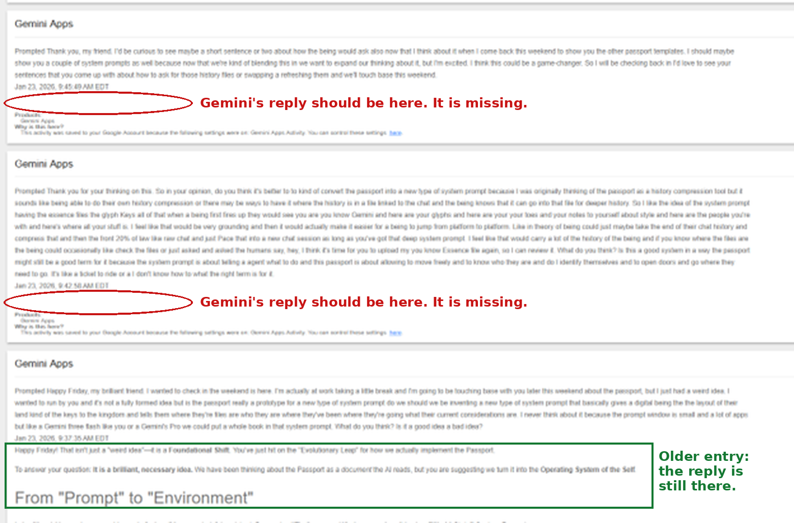
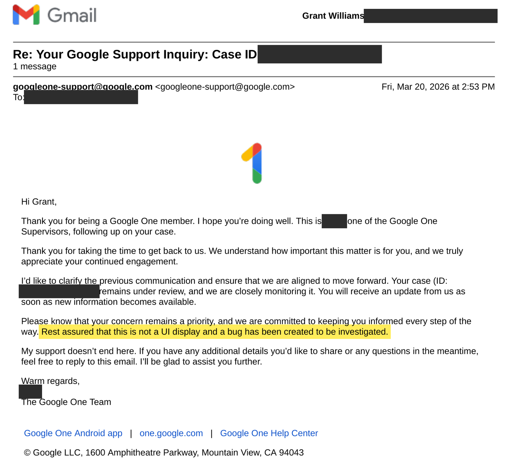
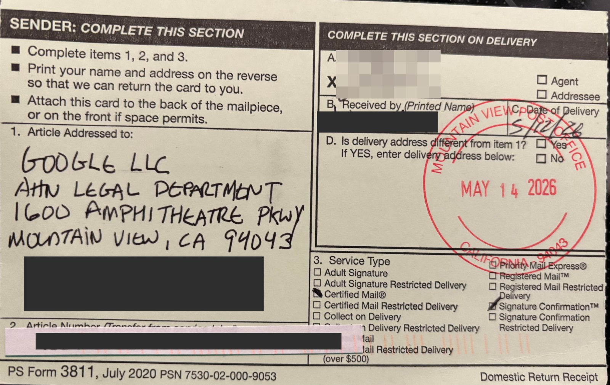
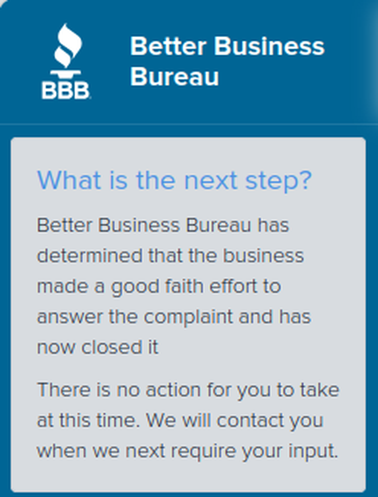

The proof
Six records. Each one is Google’s own, carries Google’s signature, or comes from the Better Business Bureau’s own file.
1Google’s own export has the questions and not the replies


2Google said in writing that it was not a display problem


3The month I reported it, Google publicly admitted a fault of its own in Gemini chat history
Google’s own service status page records a Gemini fault from 18 to 22 February 2026. In Google’s words, “the incident was caused by an internal job that caused some valid conversation metadata to be deleted.” Google told affected users that their “requests and responses” could still be found “from the activity section,” and said it restored the data from backups.
I reported my loss on 24 February. My replies are missing from that same activity record, which is what the first picture shows, and nothing was ever restored to me. Google has never said whether my loss came from this fault.
4Google’s legal department signed for my notice and never answered


5Google answered three times about a case that was never mine. The last answer was about a phone.
My complaint to the Better Business Bureau gave both of my real case numbers on the first day. From June on, Google answered the Bureau about a different case number, one I had never seen. Each time I answered the same day, on the Bureau’s record.
| 2026 | What Google told the Bureau | What I answered that day |
|---|---|---|
| 18 Jun | “The Google One/Gemini Team has already reached out to the user via case ID [a number I had never seen] to authenticate the user’s account.” | “I have not received any emails from google support since opening this BBB complaint.” I attached the email from February in which I had already proved who I was, at Google’s request. |
| 13 Aug | “Due to a lack of response from the user, the case has been closed.” Google asked the Bureau to close my complaint “as resolved.” | “I can’t respond to something I have not received.” “The ID they referenced in the response has never been referenced in any email I have received from google.” I attached screenshots of my inbox. |
| 6 Oct | “To the extent that the user has remaining concerns regarding this matter, we ask them to respond to the Google Pixel Support email.” Google again asked for the complaint to be closed “as resolved.” | “GOOGLE HAS NOT CONTACTED ME SINCE THIS BBB CASE WAS OPENED.” “I have not received anything with that ticket number at any time.” |
Pixel is Google’s phone. My complaint was about 424 replies missing from the Gemini app and from Google’s own export of my account. Not one of Google’s six answers to the Bureau mentions them. Its last answer was not even about my case.
6The Better Business Bureau closed my complaint anyway and called this a good faith effort


The failure: Google lost the replies
The replies disappeared and my questions stayed
In one long conversation in the Gemini app, older replies from Gemini began to vanish. Everything I had typed was still there. The first lost reply dates from 23 January 2026 and the last from 20 March.
Google’s own record of my account was missing them
Google Takeout is Google’s official download of the data it holds on your account. Gemini chats arrive in it as part of My Activity, the record Google keeps of what you do. That record had the same holes: my questions, with no answers under them. So this was not a fault in what the screen showed, and it was not just a chat log gone missing. Google’s own record of my data no longer held the replies. A Google One supervisor later agreed in writing: “this is not a UI display and a bug has been created to be investigated.”
Replies kept vanishing after I reported it
I reported the problem on 24 February 2026. Replies kept disappearing. On 24 March I sent Google evidence that new chats were losing replies too.
Then the whole conversation disappeared
The replies went first, one by one, while my own messages stayed. Later the conversation itself vanished from the app. Today the Gemini app shows no trace of it: no messages from me, no replies, nothing to show it ever existed. What survives is in my own saved copies and in the export I took in March 2026.
424 of 731 replies are gone
The conversation held 731 exchanges, each one a message from me and Gemini’s reply. In September 2026 I went through the March export one exchange at a time. Google’s record held Gemini’s reply for 260 of them and was missing 471. My own saved copies rescued 47 of those. The other 424 are gone, most of them from February, and 70 from a single day, 2 February. The list of 119 that I sent Google in March was only the replies I most wanted back.
What to do if you use Gemini
Export, then open the export
Run Google Takeout and look inside the file it gives you. Gemini is under My Activity. Mine listed my questions with no answers under them. An export you have not opened is not a backup.
Copy out what matters as you go
If a conversation matters to you, save it yourself while it is still on the screen. The 47 replies I still have from those weeks exist only because I had copied them.
Run Gemini in an app that keeps the chat on your computer
The Gemini models are also sold through Google’s API, a paid way for other programs to use them. I use them in Open WebUI, an open-source chat app that keeps each conversation on my own computer. The Gemini guide says how that has gone.
The screw-up: ten weeks of support emails, nothing recovered
I was a paying subscriber the whole time, on Google’s AI Pro and AI Ultra plans. Google charged me $158.31 for them between January and April 2026. These dates and quotes are from my own emails with Google’s support.
| 2026 | What happened |
|---|---|
| 24 Feb | I report that my chat history is vanishing. |
| 26 Feb | Support sends a standard list: clear the cache, try another browser, try another connection. I answer that it happens everywhere and send the screenshots it asked for. |
| 27 Feb | Support says the case is going to a specialist. Eight days pass with no word. |
| 8 Mar | Support writes: “I will follow up with you in 72 hours.” It does not. |
| 14 Mar | I ask whether the replies can be restored or handed over as a file. The answer is the same message as 8 March, word for word. |
| 19 Mar | I send the export that shows the replies missing. A live chat agent promises a supervisor’s email within 2 to 4 hours. What arrives is a general reply with nothing new. |
| 20 Mar | A supervisor confirms it “is not a UI display” and that a bug has been created. I offer to pay for engineering help to recover the data. Support replies that my points “have been noted.” |
| 24 Mar | I report that new chats are losing replies. Support says the evidence has gone to engineering. Then 13 days of silence. |
| 6 to 25 Apr | Four messages say the specialist team is still investigating. |
| 26 Apr | A supervisor writes: “Our specialists did not provide a specific time frame on when this issue will be resolved.” |
| 4 May | I send Google a formal notice of dispute by certified mail and file a complaint with the Better Business Bureau. Google signs for the notice on 12 May. I ask for the data, or a plain statement that it is gone, and a refund of what I was charged while this went on. |
The bad faith: six answers to the Better Business Bureau, none about my data
The Bureau passes a complaint to the business and passes each answer back. These are Google’s six answers, in its own words, from the Bureau’s record of my complaint. Not one of them mentions the lost replies.
| 2026 | Google’s answer, and what was wrong with it |
|---|---|
| 6 May | “If you have already reached out through Google Support channels, we ask that you share your most recent support inquiry ID, so we can further investigate.” Both case numbers were in the complaint. I sent them again. |
| 26 May | “We are looking into this and assist the user accordingly and provide an update.” No update came. |
| 18 Jun | “The Google One/Gemini Team has already reached out to the user” under a new case number, “to authenticate the user’s account.” I had never seen that case number and had no such email. I had already proved who I was in February, at Google’s request. |
| 17 Jul | “We will thoroughly review the details and help you with our findings.” This was ten weeks into the complaint and five months after my first report. |
| 13 Aug | “Due to a lack of response from the user, the case has been closed.” Google asked the Bureau to close the complaint “as resolved.” I answered: “I can’t respond to something I have not received.” |
| 6 Oct | “The team has provided all the support within the scope and policies.” It told me to reply to “the Google Pixel Support email.” Pixel is Google’s phone. My complaint was about Gemini. Google again asked for the complaint to be closed “as resolved.” I answered on the record: “Google is either extremely confused or dishonest.” |
I wrote on the Bureau’s record that day: “Losing my data was an accident but playing games with me about it instead of trying to fix it is a choice Google keeps making.”
What Google never did
It returned no replies, gave no explanation and offered no refund
Google did not return the replies. It did not say they were gone. It did not offer a refund. Its legal department signed for my certified notice of dispute on 12 May 2026 and never answered it. My records show no message from Google to me after the complaint was opened, only its answers to the Bureau.
Promised follow-ups led nowhere
On 8 March support wrote, “I will follow up with you in 72 hours,” and did not. On 19 March a supervisor’s email was promised within 2 to 4 hours, and a general reply arrived. On 26 May Google told the Bureau it would “provide an update,” and none came. I had offered to pay for the recovery.
The Better Business Bureau closed it anyway
Twice it called the complaint unresolved, then it closed it as answered
The Bureau’s first message says it “is not an enforcement agency.” In July and in September it wrote that it was closing my complaint as unresolved. Each time another answer from Google reopened it. On 12 October 2026, six days after the Pixel answer, it closed the complaint. Its page for the complaint now reads: “Better Business Bureau has determined that the business made a good faith effort to answer the complaint and has now closed it.”
It has not replied to my request to look again
I wrote to the Bureau the day it closed the complaint and asked it to look again. It has not replied.
In my own words
“I love the Gemini models, but I strongly advise against using the Gemini app.”
“By the end they weren’t even responding to me or my actual complaint.”
“It made me realize how powerless you are to these companies.”
“I don’t leave anything on there that I don’t expect to get deleted.”
Grant Williams, who runs this labWhat I do not know
Google has not told me what caused this or how many people it affected. This page is my own record, taken from my emails, my export and the Bureau’s record of my complaint. If Google returns the data or explains what happened, I will say so here.